Self-driving from An Engineering Perspective
Introduction
These are my personal opinions, if you have comments, questions or ideas, please feel free to send me Emails at cgliu2008 AT gmail.com
People don't believe self-driving cars are achievable argue that:
- Computer system is not reliable and safe enough.
- Bugs in software are inevitable.
- Malicious attack can always cause trouble.
- Collision is inevitable.
- There are a lot of unsolved AI problems, for example, human intent prediction.
I believe we can achieve self-driving cars in a reasonable near future, here is why and how.
Safety - what we learn from aviation industry.
Safety Critical System
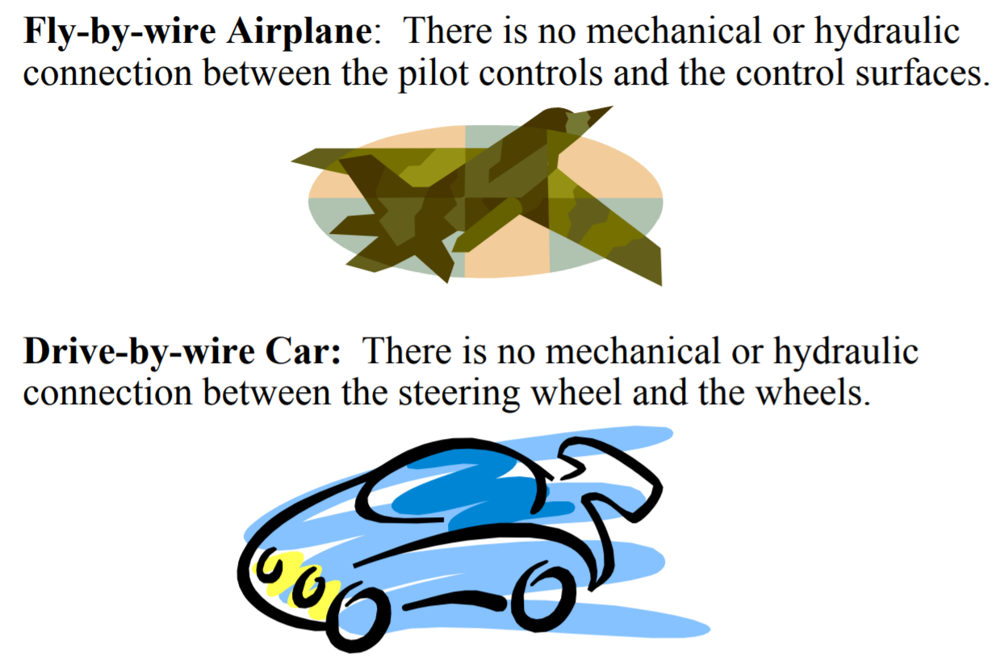
Figure 1: Examples of sefety critical system
The \(10^{-9}\) Challenge 1
Critical system services must be more reliable than any one of the components: e.g., System Dependability 1 FIT–Component dependability 1000 FIT (1 FIT: 1 failure in \(10^9\) hours)
- Architecture must be distributed and support fault-tolerance to mask component failures.
- System as a whole is not testable to the required level of dependability.
- The safety argument is based on a combination of experimental evidence about the expected failure modes and failures rates of fault-containment regions (FCR) and a formal dependability model that depicts the system structure from the point of view of dependability.
- Independence of the FCRs is a critical issue
Independence of FCRs
There are two basic mechanisms that compromise the independence of FCRs
- Missing fault isolation among the FCRs
- Error propagation–the consequences of a fault, the ensuing error, propagates to a healthy FCR by an erroneous message.
Integrated Architecture
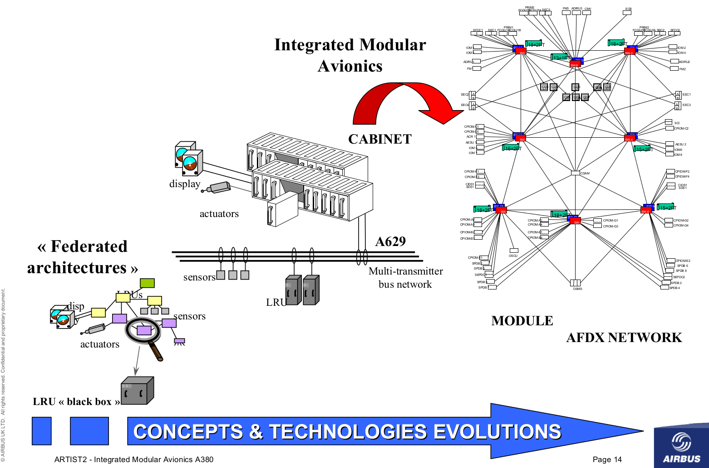
Figure 2: The transition from federated architecture to integrated architecture
Safety Consideration for Integrated Architecture
A number of technical and economic advantages could be realized if the different DASes were integrated into a single architecture
- Cost savings by the reduction of nodes, sensors and wiring points (results also in an increase in hardware reliability).
- Better integration of functions–more flexibility
Implementation of fault tolerance simplified
But
- Independence of individual DAS compromised–increased potential of error propagation from one DAS to another DAS
- Integration increases complexity and diagnostics
- Allocation of responsibility more difficult
Platform Safety - Platform
DO-297 Integrated Modular Avionics (IMA) Development Guidance and Certification Considerations
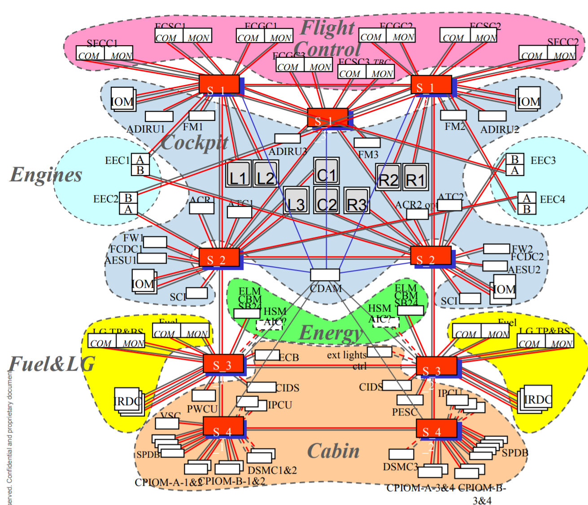
Figure 3: A380 integrated modular avionics
Platform Safety - OS
- Operating System ARINC 653 (Avionics Application Standard Software Interface) a software specification for space and time partitioning in safety-critical avionics real-time operating systems (RTOS).
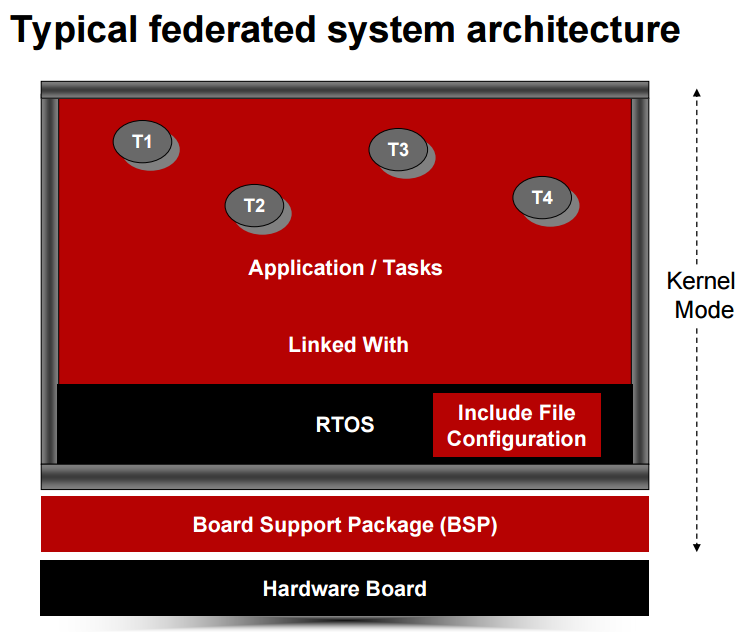
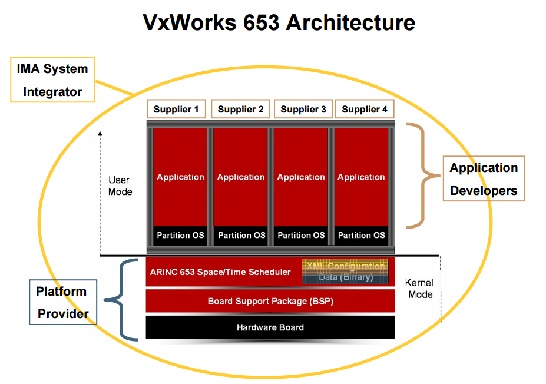
Platform Safety - Network
- AFDX Avionics Full-Duplex Switched Ethernet (AFDX)
- ARINC 664
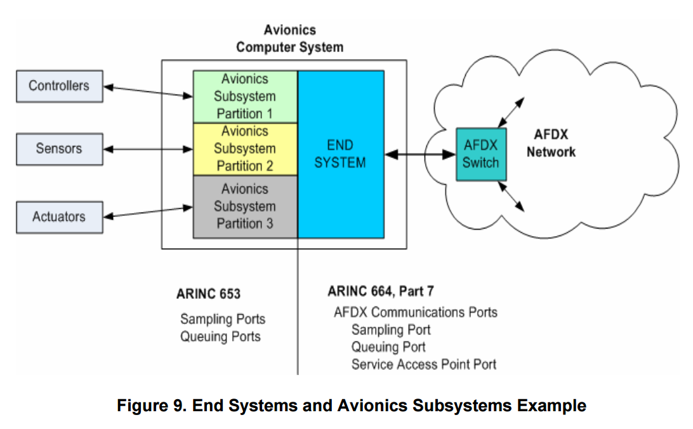
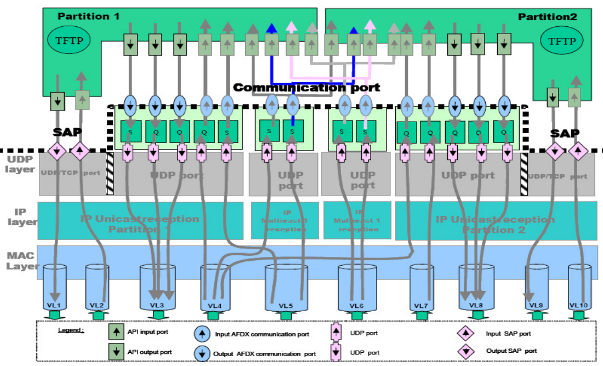
Platform Safety - Software
Software DO-178B, Software Considerations in Airborne Systems and Equipment Certification
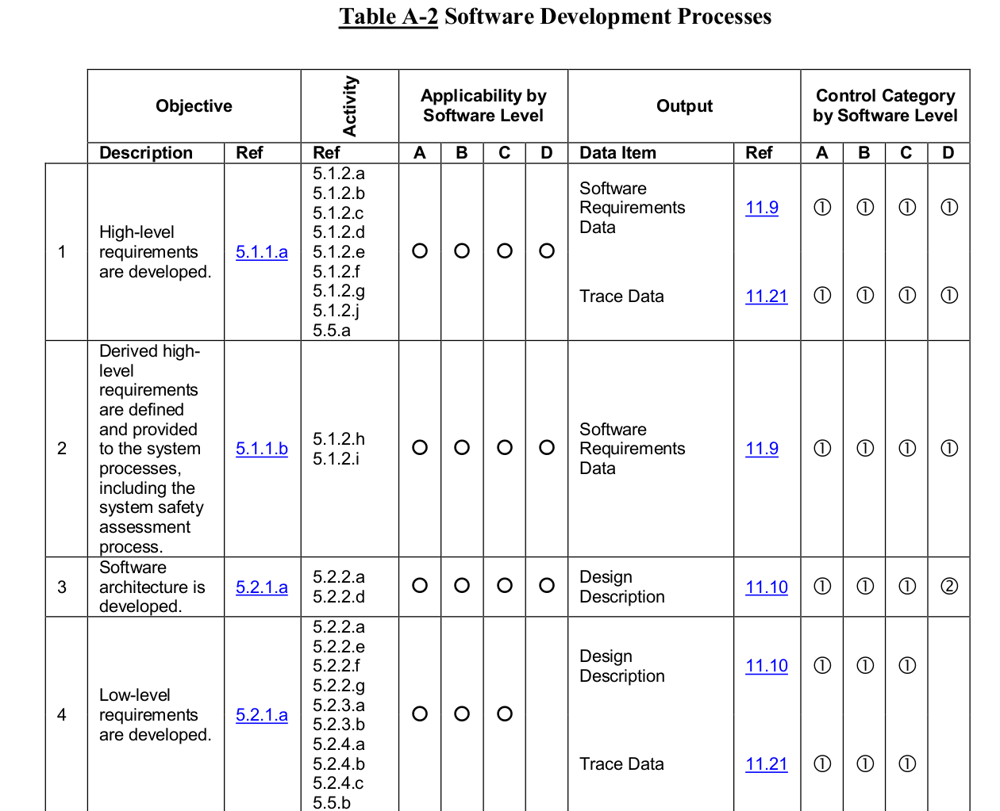
Figure 8: DO-178B Software Development Processes Objectives
Platform Safety - Hardware
DO-254, Design Assurance Guidance For Airborne Electronic Hardware
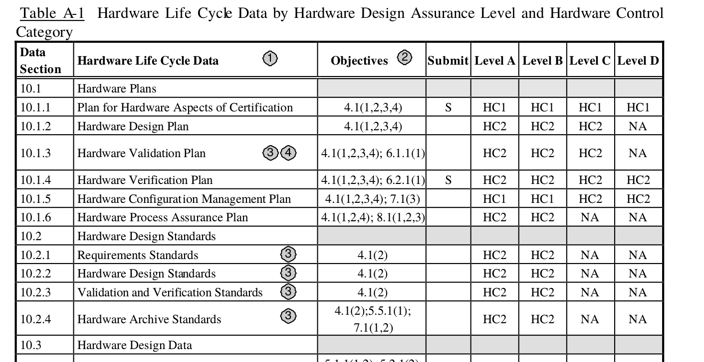
Figure 9: DO-254 Hardware Control Category
Integrated Architecture for Self-driving Cars
- Partitioning system, the performance of each system must be unaffected by any other
- To allow systems to be developed, tested and verified separately
- To allow system faults to be contained
- To allow new systems to be added post certification
- For self-driving platform, we need to have partitioned computing, communication and interface resources.
- In short, the safety can not be achieved only by testing, but also by a careful plan, design, implementation, and validation and verification process. For self-driving cars, it is impractical to follow the same process as what in Aviavion for now. But a minimal system engineering effort is still required, which will save money and time.
Collision Is Inevitable
Collision is inevitable?
- Yes. According to safe drive speed analysis, there is always collision possibility as long as the vehicle moves.
- But
- we are not responsible for all kind of collisions, for example, collisions by others' faults.
- the severity level is different for collisions
- Therefore, we only need to show due care to inevitable collisions and collisions caused by others' faults.
Self-driving Is Not 'An AI Problem'
For self-driving, what are we trying to solve?
An autonomous car is a vehicle that is capable of navigating without human input.
Driver-less has already been achieved during the DARPA Robotics Challenges!
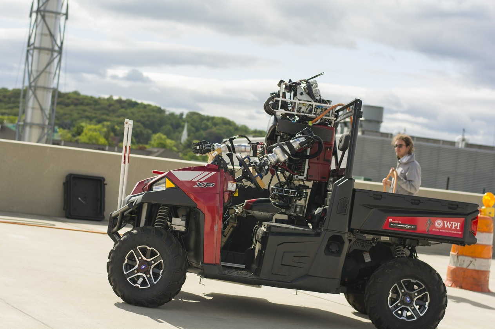
Figure 10: The driving task in the DARPA Robotics Challenge
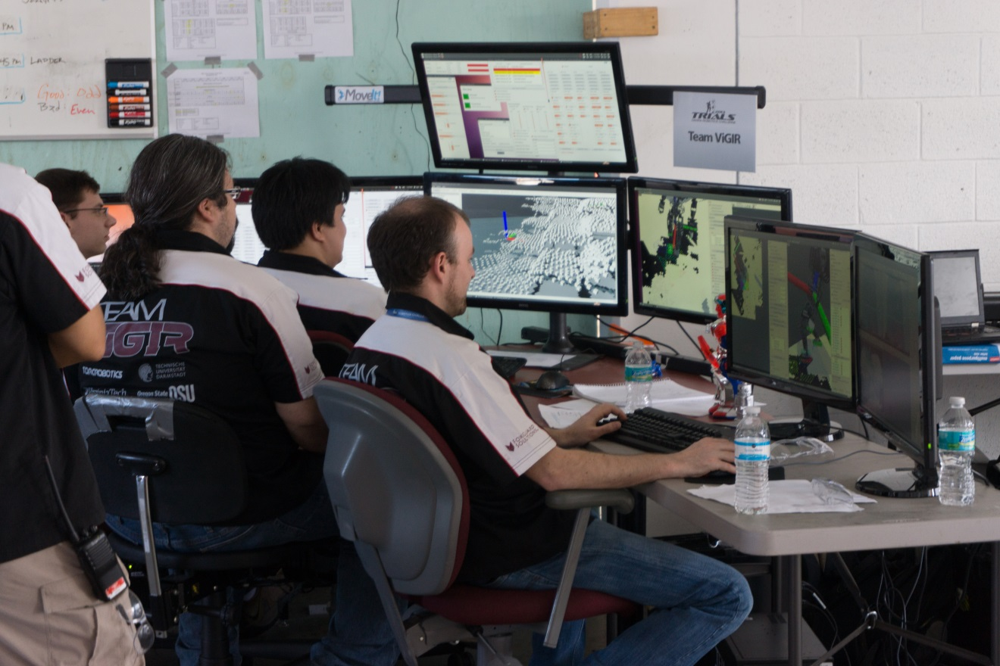
Figure 11: Behind the scene
- Autonomous \(\ne\) Driver-less
- Driverless is not an 'AI' problem
- AI problems are problems that haven't been solved yet.
- AI is the distance metric to driver-less. The more AI in the system, the further are we from achieving self-driving!
The system design should minimize AI problems!
How to minimize AI problems?
- Limit scope by simplifying scenarios and operational conditions
- Use as much prior knowledge in the maps as possible
- Minimize system perception-reaction latency and take advantage of feedback control. The faster the system can response to the dynamic environment, the less challanging are the AI problems.
- Have humans in the loop to solve the most challenging AI problem
- Take uncertainties into account during motion planning (robust motion planning)
- Machine learning methods are good ways to improve performance, but they are not magic. The non-interpretative issues with the black-box learning approaches may trap us before achieving acceptable performance. Pure data-driven approaches are expensive and hard to delever on time.
System Architecture and Development Consideration
Natural Evolution
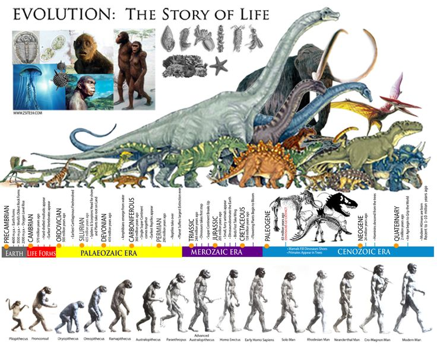
Survive first and then win
Self-driving Architecture
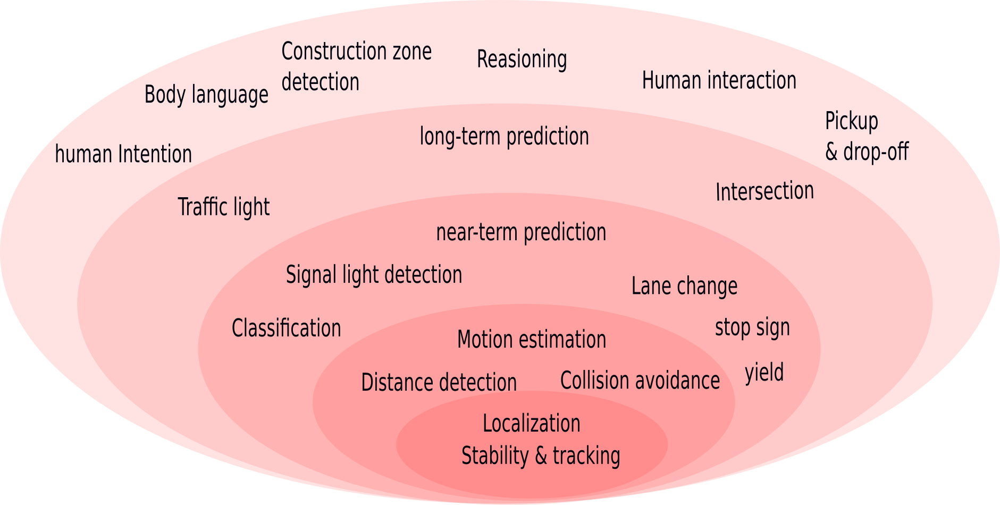
- Each module shall be self-contained and fully functioning.
- Each module shall be fully tested.
- The system shall be developed inside-out. The cost is high if doing the opposite.
- The response time shall decrease towards the kernel.
- The inner modules are critical to the system robustness.
- The outer modules are important to the system performance (e.g. higher drive speed) and capabilities (e.g. more scenarios).
The goal is to build a harmonious system!!!
Lesson Learned from the DARPA Robotics Challenge
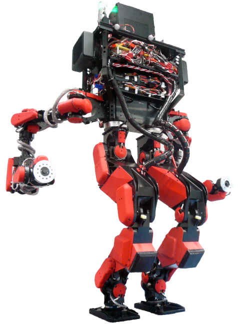
- Nimble robots win!
- A hierarchical optimization architecture are widely accepted.
- 'AI' methods are attractive, but be very careful when you decide to use them.
- High-speed feedback control is the most efficient way to handle uncertainties and model errors.
Lesson learned from the egress task
- The car egress: get the robot outside of the car
- Challenges:
- Keep balance
- Maintain contacts
- Highly constrained space
- Many uncertainties
For egress, high-speed feedback control is critical to the success!2
What causes a system fragile?
- 'Perfectness' assumption. The assumption that the perception and prediction system are 'perfect' makes the system vulnerable to the dynamic world.
- Dead loop
- To improve the performance of the perception, it becomes heavy and slow.
- To achieve a perfect prediction system, it becomes heavy and slow.
- Since the system is slow, the motion planning requires even better perception and prediction.
- Handle failure cases separately. the system thinks too much, react too less
Performance goals
We need to consider the system as a whole and optimize its components all together, for example, the following formula reveals the connects between perception, localization, prediction, planning and control: \[ \mathrm{clearance} = v_0 \tau + \frac{v_0^2}{2 a} + 2 \sqrt{\sigma_{p}^2(0) + T^2 \sigma_v^2(0)} \] Refer to another post of mine safe driving speed for self-driving cars for more details.
Divide and conquer, but don't design separately and try to achieve unrealistic performance goals!
Motion Planning System Design Consideration
Motion planning system functionality
- Navigation: from A to B:
- Guidance: obey traffic law
- Control: collision avoidance
Optimization-based motion planning
- Rather than designing control policy or rules, the designers design cost functions.
- Let optimization algorithms to figure out the optimal policy
- Pros:
- More direct than designing policy
- Easy to get the system to work
- Make it possible to build a harmonious system, all components serve the same goal
- Compatible with Reinforcement Learning framework
- Better performance
- Cons
- It is still challenging to find a good cost function
- Convergence issue
- Real-time issue
- Robustness issueh
- Pros:
Driving problem formulation
The objectives:
- Minimize the time to the destination
- Minimize the risk of collision
- Maximize ride quality
Subject to:
- Dynamics constraints
How to model the risk
\[ \mathrm{risk} = \mathrm{severity} \times \mathrm{exposure} \times \mathrm{probability} \]
The expectation of collision rick: \[ \mathrm{E}(\mathrm{risk}) = \int_0^t \mathrm{severity}(\tau) p(\tau) d\tau \]
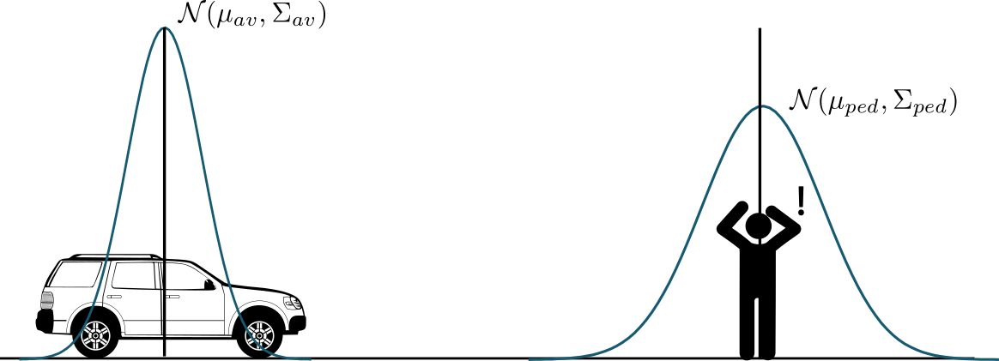
Figure 16: Probabilistic collision
The collision probability: \[ p(t) \approx \int_{S} p_{av}(x, y|t)p_{obs}(x, y|t) dxdy \]
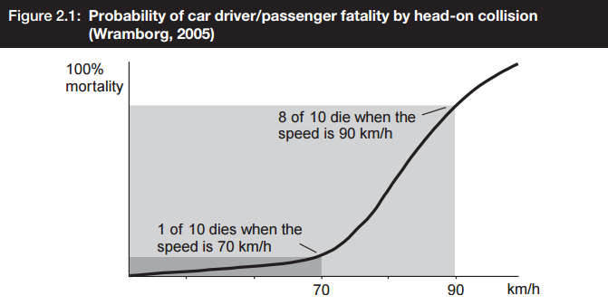
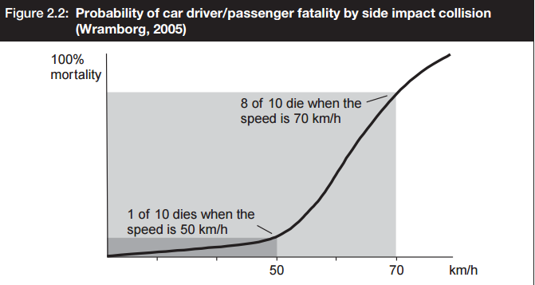
The severity level at urban drive speed (< 50 mph): \[ \mathrm{severity} \propto v \]
Therefore, \[ E(risk) \approx \int_{0}^t \int_{S} v(\tau) p_{av}(x, y|\tau)p_{obs}(x, y|\tau) dxdy d\tau \]
Optimal planning problem
\[ U = \arg \min_{u(\cdot)} \big \{ \mathcal{L}_f(x, u, t_f) + \int_{t_0}^{t_f} \mathcal{L}(x, u, t) dt \big \} \]
and subject to: \[ x(0) = x_0 \] \[ h(x,u) \le 0 \] \[ \mathrm{E}(\mathrm{risk}) \le \mathrm{risk\_level} \]
The cost functions should take the collision risk, ride quality, lane boundary, road boundary, the desired driving path into account.
It is still challenging to design a good cost function.
Optimization-based motion planning
- Navigation (long-range)
- Ignore dynamic obstacles
- Low resolution, such as at lane level
- spatial and temporal constraints, e.g. time-based lane
- Methods: A*, D*, PRM, and etc.
- Decision making (long-range and long-term)
- Simple model, low quality, long-term
- Method: Dynamic programming
- Trajectory optimization (mid-range and mid-term)
- Full model, high quality, mid-term
- Methods: DDP, iLQR, Direct collocation, Pseudospcetral methods, or spline + differential fatness.
- Control
- Full-model, high quality, short-term
- Method: Finite-horizon LQR, LQR gain scheduling, QP, ADRC and etc.
Optimization-based motion planning
- Improve performance
- Cache cost and avoid duplicate computation
- hessian matrix approximation,
- parallelism (e.g. multiple shooting)
- Hierarchical optimization architect
- Improve convergence and robustness
- Warm-start generation
- multiple shooting
From Excellent to Superb
Improve system performance
Improve system robustness
- Hierarchical optimization architecture 6
- Long-term optimization optimizes for highly-likely, slowly-changing things
- Short-term optimization optimizes for less-likely, fast-changing things
- Offline planning + online feedback control 2
- Warm-start generation, e.g. using non-parametric optimizer to generate a warm-start for parametric optimizer7.
- Plan for uncertainties, e.g. hindsight optimization
- Belief space planning
Summary
- System design shall avoid or reduce AI problems
- System development should follow a similar path as natural evolution.
- Hierarchical optimization architecture
- Plan for uncertainties
- Evaluate system safety as a probability and design for it.
- Fast closed-loop control is the most efficient way to improve system robustness.
Figure 19: A harmonious optimal system
Footnotes:
From a federated to an integrated architecture for dependable embedded systems, H. Kopetz, TU Wien, September 2004
Full-body motion planning and control for the car egress task of the DARPA robotics challenge, Chenggang LIU, C.G. Atkeson, Siyuan Feng, and Xinjilefu, Humanoids 2015, 3-5 Nov. 2015. DOI: 10.1109/HUMANOIDS.2015.7363583
Trajectory-based dynamic programming, Christopher G. Atkeson and Chenggang LIU, Modeling, Simulation and Optimization of Bipedal Walking Cognitive Systems Monographs, Volume 18, 2013, pp 1-15
Standing balance control using a trajectory library, Chenggang LIU and Christopher G. Atkeson(2009), IROS 2009, 3031-3036.
Biped walking control using offline and online optimization Chenggang LIU and Jianbo SU, China Control Conference (CCC), 2011 30th Chinese, 22-24 July 2011
Optimization-based Full Body Control for the DARPA Robotics Challenge, S. Feng, E. Whitman, X Xinjilefu, and C. Atkeson, Journal of Field Robotics, Volume 32, Issue 2, pages 293-312, March 2015.
Biped walking control using a trajectory library, Chenggang LIU, Christopher G. Atkeson, and Jianbo SU, Robotica, Volume 31 Issue 2, March 2013, Pages 311-322